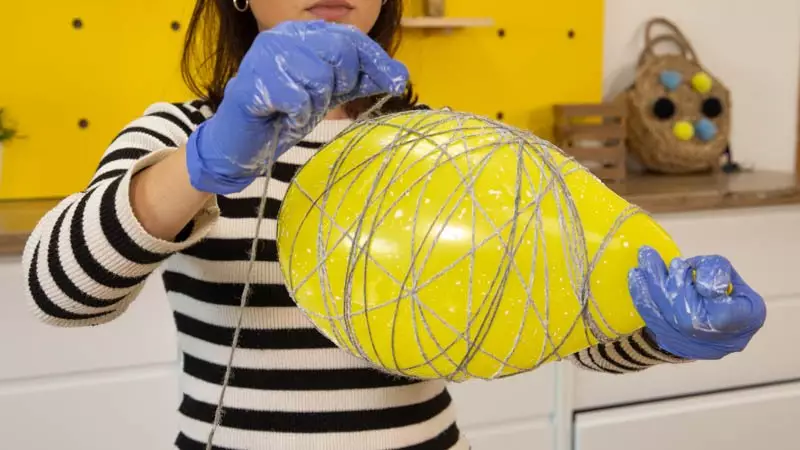
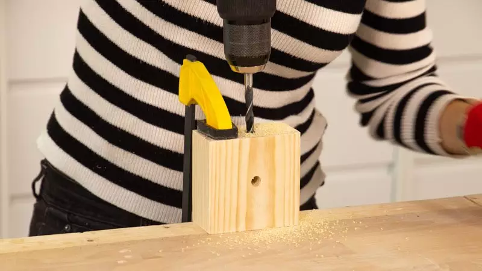
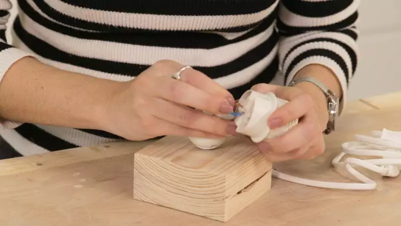
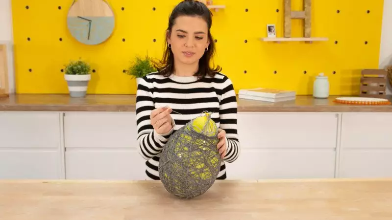
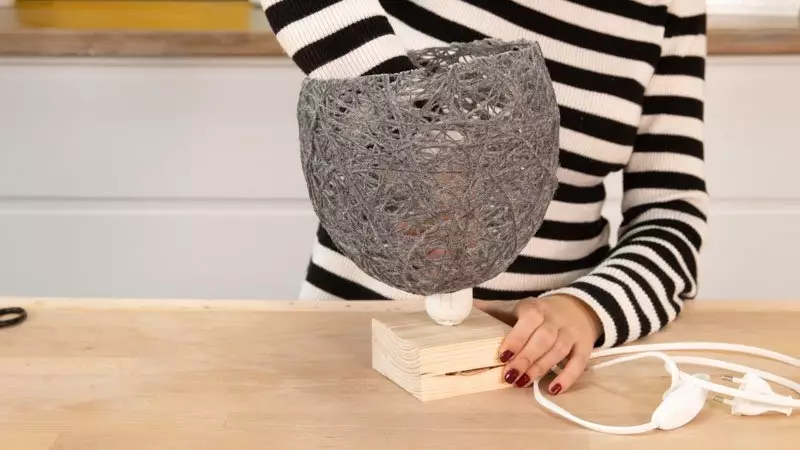

Este equipo esta creado por Natalith Campos, Damelia Guerra y Talia Sierra, las tres somos diseñadoras industriales y queremos inspirar a mujeres a seguir sus metas como lo hicimos nosotras. Empezamos a ayudar en el negocio familiar y quisimos crear nuevas formas de innovar los espacios interiores con una estructura más moderna que cautive a nuestros clientes.
Para empezar a hacer tu lámpara con hilo de lana, infla un globo y lo atamos. Esta será la base para enrollar todo el hilo. Después, en un cuenco de cristal, mezcla agua y cola blanca a partes iguales y revuélvelo hasta que se mezclen bien las dos partes. Introduce la lana o el hilo con el que vayas a hacer la lámpara y empápalo bien. Nosotros hemos utilizado hilo de lana para hacer nuestra lámpara.
Cuando ya tenemos la forma de la base de tu lámpara, creamos los agujeros por los que pasamos el cable. En la parte central tendrás que hacer un agujero por el que entre el tubillón roscado. Nosotros hemos utilizado, en relación con el tamaño de nuestra base y el cable, una broca de 9,5 mm de diámetro. Coloca la broca y marca el centro de la madera. No llegues a perforar la madera hasta el final, solo hasta la mitad de la estructura, porque luego abrirás el otro agujero en perpendicular, por donde pasaremos el cable.
Para empezar a montar el sistema eléctrico, introduce el cable en el agujero lateral y sácalo por el de arriba. Luego introduce el tubillón roscado en el casquillo y después introduce el cable por el agujero. Insertamos el casquillo con el tubillón en la peana de madera.
Cuando el hilo está seco, utilizamos una aguja para explotar el globo y sacar el globo pinchado de la estructura de lana seca. Después con unas tijeras, cortamos la estructura de la lámpara. Utilizamos las tijeras también para abrir un poco más el agujero de la parte que va unida a la peana y por la que pasarás el casquillo. Inserta el casquillo y ciérralo con la rosca. Colocamos la bombilla. ¡Y está listo para que conectes tu lámpara!
 Nombre Completo
Correo Electronico
Contraseña